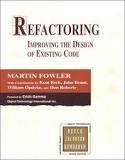
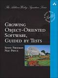
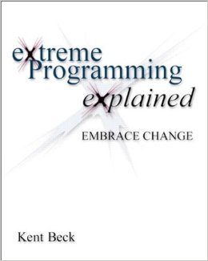

Recommended Reading For Developers
Part I - Basics
Clean Code - Robert C. Martin
 The most important aspect of the transition from writing code for assignments or small projects to writing real world software is writing it for readability and extensibility, and this book contains one of the most comprehensive yet digestible explanations of how to do it. It covers naming conventions, commenting, code design, refactoring, error handling, code smells, and more. This is the book that will give an inexperienced developer the tools to make significant contributions to a software project.
The most important aspect of the transition from writing code for assignments or small projects to writing real world software is writing it for readability and extensibility, and this book contains one of the most comprehensive yet digestible explanations of how to do it. It covers naming conventions, commenting, code design, refactoring, error handling, code smells, and more. This is the book that will give an inexperienced developer the tools to make significant contributions to a software project.
Refactoring - Martin Fowler
For a software developer contributing to any long-lived piece of software, refactoring becomes at least as prevalent an activity as writing new code. The client of a piece of software has a finite set of problems they need to solve. The challenge in software is therefore continually improving at solving those problems. In order to do this, the code needs to be continually updated while staying supple and free of bugs. The tool with which to achieve such code is refactoring. Martin Fowler’s book is a great introduction for the novice, and a reference to keep within reach at all times for the experienced.
Growing Object-Oriented Software, Guided by Tests - Steve Freeman, Nat Pryce
Writing software without tests is like shooting in the dark, yet it’s a difficult skill that many developers don’t dedicate the time to learning properly. Part of the problem is that writing tests can sometimes feel a chore that’s done after the interesting problem solving is completed. This book not only explains how to write good tests, but how to make the process of writing tests inextricable from the process of writing code.
Part II - Process
Extreme Programming Explained - Kent Beck
“Agile” has become such a buzz word that it’s sometimes hard to figure out what an agile process is actually supposed to look like. Because Extreme Programming is such a well specified flavor of agile, it can teach us a lot about the true essence of agile: always doing the simplest thing, having a customer on the team, refactoring relentlessly, writing automated tests, and more... You don’t need to believe in strict XP in order to get a lot of extremely valuable ideas from this book, which is why I recommend it as a general process book even though it seems so specific. Clean Coder
The Clean Coder - Robert C. Martin
 A book that emphasizes how to behave professionally as a programmer. In a work culture dominated by 20-somethings in casual office settings, some of this advice falls by the wayside. Even if you wear a t-shirt to work, you should still take your work with the utmost seriousness and professionalism. Take responsibility for your code, work hard, be a team player, never submit bad work, etc.
A book that emphasizes how to behave professionally as a programmer. In a work culture dominated by 20-somethings in casual office settings, some of this advice falls by the wayside. Even if you wear a t-shirt to work, you should still take your work with the utmost seriousness and professionalism. Take responsibility for your code, work hard, be a team player, never submit bad work, etc.
Part III - Design & Architecture
Domain Driven Design - Eric Evans
 This book is a great introduction to higher-level, AFK software design. It emphasizes communication with experts in the problem space in order to come up with a mutually understood model that can be used to tackle the important business problems. This model should not only serve as the basis for the structure of the program (more specifically, one clearly delineated layer of the program, decoupled from the technical infrastructure and from the application logic) but as a language for communication between developers, the rest of the business, and clients.
This book is a great introduction to higher-level, AFK software design. It emphasizes communication with experts in the problem space in order to come up with a mutually understood model that can be used to tackle the important business problems. This model should not only serve as the basis for the structure of the program (more specifically, one clearly delineated layer of the program, decoupled from the technical infrastructure and from the application logic) but as a language for communication between developers, the rest of the business, and clients.
The book details techniques for coming up with an initial model, including standard patterns in good domain models, how to continually refactor the design, and dealing with large models in large organizations.
Appendix - Web Development
Building Microservices - Sam Newman
 Although specifically aimed at microservices, this book is generally a good introduction to service oriented architecture. A lot of the advice still applies if you plan on extracting somewhat larger services from your monoliths. Beyond that, it can explain the benefits and challenges of further splitting up your architecture into many different tiny services.
Although specifically aimed at microservices, this book is generally a good introduction to service oriented architecture. A lot of the advice still applies if you plan on extracting somewhat larger services from your monoliths. Beyond that, it can explain the benefits and challenges of further splitting up your architecture into many different tiny services.
Patterns of Enterprise Application Architecture - Martin Fowler
 Don’t be turned off by all the “Enterprise Java” in this book. Many of the patterns that Martin Fowler describes have become an integral part of the fabric of web development, even for dynamic languages like python and server-side javascript. This book will give you the vocabulary to talk about these patterns and goes over the tradeoffs you may not already be aware of. In my opinion, required reading for anyone responsible for architecting web applications.
Don’t be turned off by all the “Enterprise Java” in this book. Many of the patterns that Martin Fowler describes have become an integral part of the fabric of web development, even for dynamic languages like python and server-side javascript. This book will give you the vocabulary to talk about these patterns and goes over the tradeoffs you may not already be aware of. In my opinion, required reading for anyone responsible for architecting web applications.
Javascript Allongé - Raganwald Braithwaite
Quite simply the best book on Javascript. Not as much about best practices as it is about really grokking the language. It has all the best answers to common questions like how does the prototype chain work? what does “this” reference? how does equivalence work? etc. It’s playful, smart, and very in depth.